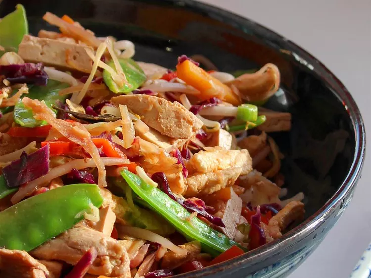

Skillet Slaw

Description
this is a nice easy 1 pot (skillet ackchually) recipe you can use after a busy, exhausting day at work!
Ingredients
- 1 tablespoon chipotle hot sauce.
- 1 tablespoon rice vinegar
- 1 tablespoon soysauce
- 1.5 teaspoon minced ginger
- 1 teaspoon agabe syrup
- 1 tablespoon olive oil
- 1 tablespoon sesame oil
- 1 pound ground turkey
- 1/2 teaspoon salt
- 1/2 tablespoon ground black pepper
- 8 ounce coleslaw mix
- 1/2 red bell pepper, diced
- 2 green onions, or more to taste, chopped
- 2 cloves garlic, minced
- 1 tablespoon sesame seeds
Steps
- Mix chipotle hotsauce, rice vinegar, soy sauve, ginger, and agave syrup together in a small bowl to make the sauce
- heat olive oil and sesame oil in a wok or large skillet over medium heat.
Add ground turkey; cook for about 6 min. Season with salt and pepper. Transfer to a bowl, reserving juices for the wok
- combine colesalw mix, red bell pepper, green onions, and garlic in the wok;
cook and stir over medium heat until slaw is slightyly wilted, about 1-2 min. Add sauce, mix to combine, about 1 min.
Return turkey to the wok and stir until heated through, about 2-3 min
- Spring Sesame seeds over slaw before serving